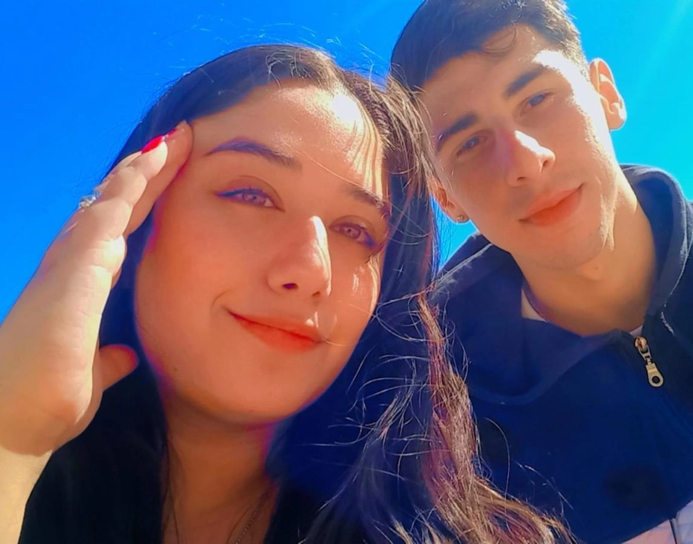
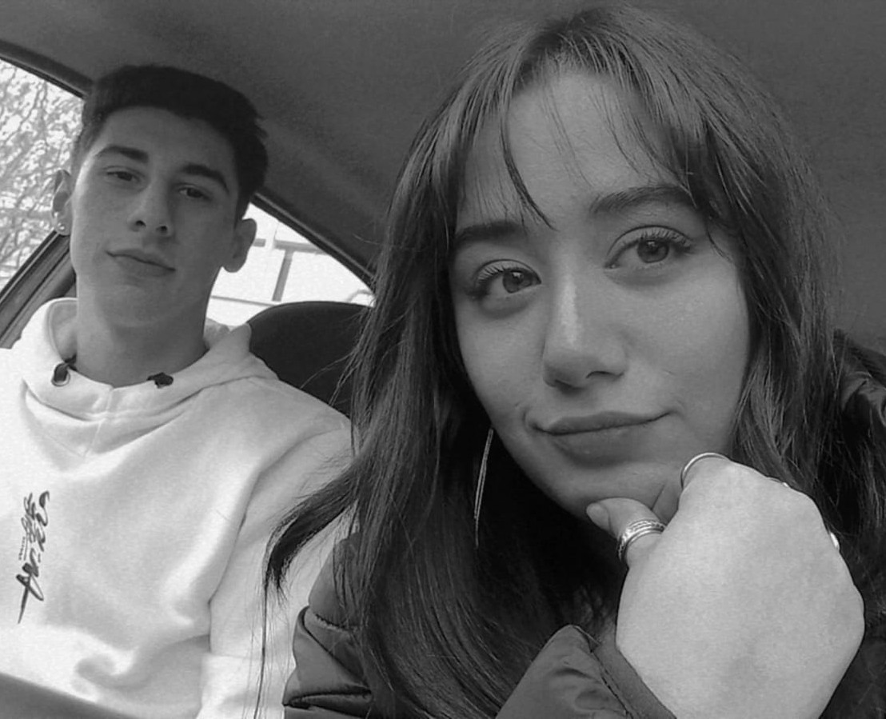

FOTOS

VIDEOS
SALIDAS
ANECDOTAS

Esta pagina va a ser como nuestro diaro. Voy a ir publicando nuestras fotos, salidas, anecdotas y demas. Todo con la idea de que quede bello y guardado. Es mi regalo con todo el cariño para usted, espero que les guste
Mi Pollito:
Esta vez quiero regalarte algo que va más allá de lo material, algo que pensaba desde que me meti con esto de las paginas y siempre pense en usted. Es un pequeño espacio de nosotros, de esta relacion hermosa, de lo que vamos viviendo y construyendo día a día.
Con mucho amor, memoria y una felicidad por esperar tu carita y ver si te gustaba, creé una página web solo para nosotros. Un espacio donde solo esten los cachorritos y quede inmortalizado.
Miralo con calma y entre los dos revivimos cada momento que fuimos compartiendo. La verdad que yo al ir creandola me diverti mucho y recorde cada momento con nostalgia. Cada imagen, video y palabras fueron con amor hacia mi cachorra.
Mi princesa, sos mi felicidad para siempre, todo es diferente y divertido con vos, hasta cuando la enojo de mas y me reta jejej. Pero siempre te eligiria, mi novia, mujer, esposa, amiga y compañera de risas y maldades.
Este regalo es solo un detalle, de todo lo que la amo y que veo que siempre que pueda le voy a dar los detalles mas hermosos.
Te amo infinitamente mi amorr!!!